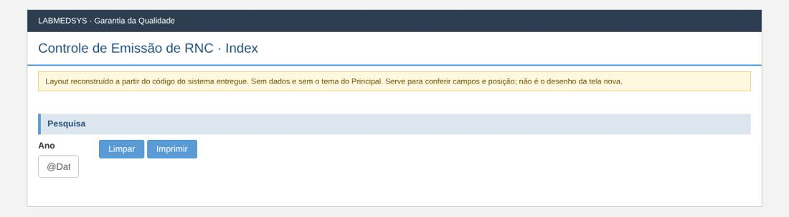

Menu: Garantia da Qualidade · Controle de Desvios · Ficha: rascunho automático, a completar · Origem no sistema entregue: ControleEmissao
As telas novas seguem o processo e as regras do sistema entregue, sem transcrever o que for falha de código, de conceito ou de campo mal colocado. Cada decisão na ficha é Manter, Corrigir ou Ideal depois.
Como é a tela no sistema entregue (layout reconstruído)
Reconstruído a partir do código das páginas do sistema entregue: mostra os campos, os rótulos, os asteriscos de obrigatório e a posição. Não tem dados e não usa o tema do Principal; os prints reais estão logo abaixo. Opções marcadas por padrão (caixas e botões de opção) são do código, não de dados.
Lista

Levantamento no código (rascunho automático)
A ficha completa desta tela ainda não foi escrita. Abaixo está o levantamento automático feito no código do sistema entregue: páginas, rotas, campos, modelos, regras de validação do servidor, situações e mensagens.
Menu: Garantia da Qualidade › Controle de Desvios › Controle de Emissão de RNC
Origem no legado: área Bloco2, controlador ControleEmissaoController (HSolutions.GQ.UI/Areas/Bloco2/Controllers/ControleEmissaoController.cs)
Estado: rascunho automático do levantamento; a ficha completa fica em ../fichas/.
Este levantamento descreve o comportamento atual do sistema entregue, sem julgamento. A decisão do que manter, corrigir ou deixar para o ideal está na ficha completa.
1. Páginas da tela
| Página | Arquivo | Modelo |
|---|---|---|
| Index | HSolutions.GQ.UI/Areas/Bloco2/Views/ControleEmissao/Index.cshtml | — |
2. Ações do controlador (rotas)
| Ação | Retorno | Parâmetros | Atributos | Linha |
|---|---|---|---|---|
| Index | ActionResult | 24 | ||
| Imprimir | ActionResult | int Ano | HttpGet | 30 |
3. Campos, colunas e botões
Index (HSolutions.GQ.UI/Areas/Bloco2/Views/ControleEmissao/Index.cshtml)
Rótulos: Ano (:22)
| Tipo | Campo | Linha |
|---|---|---|
| input:text | txtANO (máx 4) | 23 |
Botões e atalhos: Limpar (:27); Imprimir (:28)
4. Modelos de dados da tela
5. Situação (estado) e histórico
O levantamento de situações não traz este controlador.
6. Regras de validação do servidor
Cada linha é uma regra que o servidor confere ao gravar. A mensagem é a que o usuário vê.
Nada encontrado.
7. Mensagens (servidor e navegador)
Nada encontrado.
Script HSolutions.GQ.UI/Areas/Bloco2/Script/ControleEmissaoRNCIndex.js — ações chamadas: actionImprimir
| Mensagem do navegador | Linha |
|---|---|
| Informe um Ano entre o atual até 10 anos anteriores! | 12 |
8. A completar na análise
- [ ] Regras de cada campo (obrigatório, tamanho, máscara, origem da lista).
- [ ] Quem pode ver e executar cada ação (funções de permissão).
- [ ] Lookups com outros módulos (Estoque, Produção, Principal).
- [ ] Anexos, relatórios (PDF) e notificações.
- [ ] Falhas conhecidas a replicar (inventário de telas e plano de testes).
- [ ] Casos de teste de aceite (plano de testes da GQ).